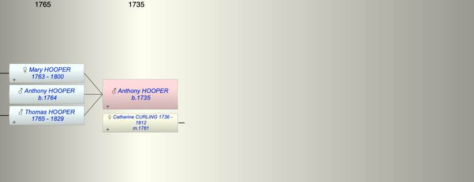

| [Index] |
| Anthony HOOPER (1735 - ) |
|  |
| b. 1735 |
| m. 21 Dec 1761 Catherine CURLING (1736 - 1812) at St Laurence |
| Children (3): |
| Mary HOOPER (1763 - 1800) |
| Anthony HOOPER (1764 - ) |
| Thomas Abbott HOOPER (1765 - 1829) |
| Events in Anthony HOOPER (1735 - )'s life | |||||
| Date | Age | Event | Place | Notes | Src |
| 1735 | Anthony HOOPER was born | ||||
| 21 Dec 1761 | 26 | Married Catherine CURLING (aged 25) | St Laurence | both single ex FMP PR | |
| 1763 | 28 | Birth of daughter Mary HOOPER | St Laurence | Note 1 | |
| 1764 | 29 | Birth of son Anthony HOOPER | St Laurence | Note 2 | |
| 1765 | 30 | Birth of son Thomas Abbott HOOPER | Note 3 | ||
| 1800 | 65 | Death of daughter Mary HOOPER (aged 37) | St Laurence | Note 4 | |
| 19 May 1812 | 77 | Death of wife Catherine CURLING (aged 76) | St Laurence | aged 76 ex MIs | |
| 1829 | 94 | Death of son Thomas Abbott HOOPER (aged 64) | Southwark | Note 5 | |
| Personal Notes: |
| possibly bap 8 Oct 1735 St Laurence son of Christopher and Mary |
| Created on a Mac™ using iFamily for Mac™ on 8 Oct 2023 |